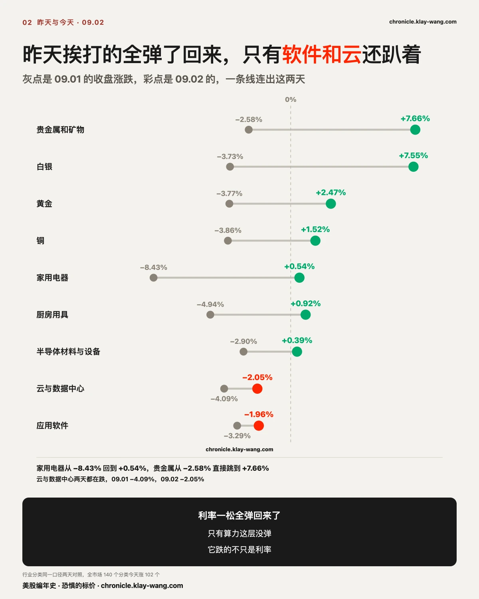
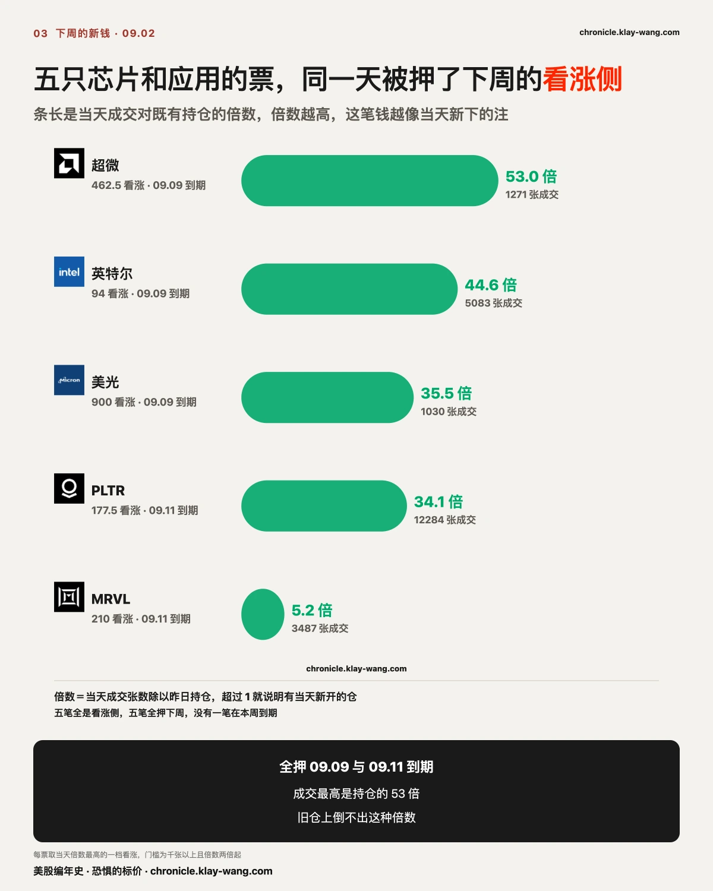
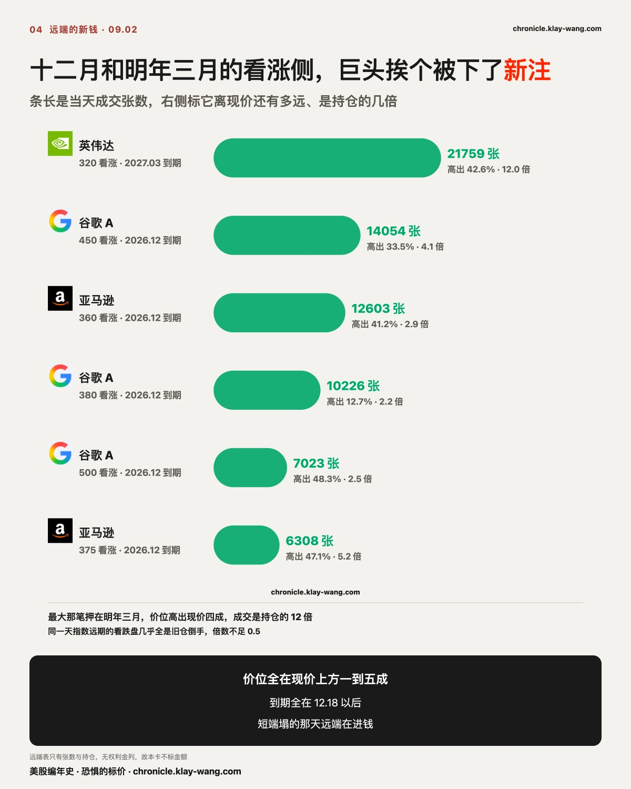
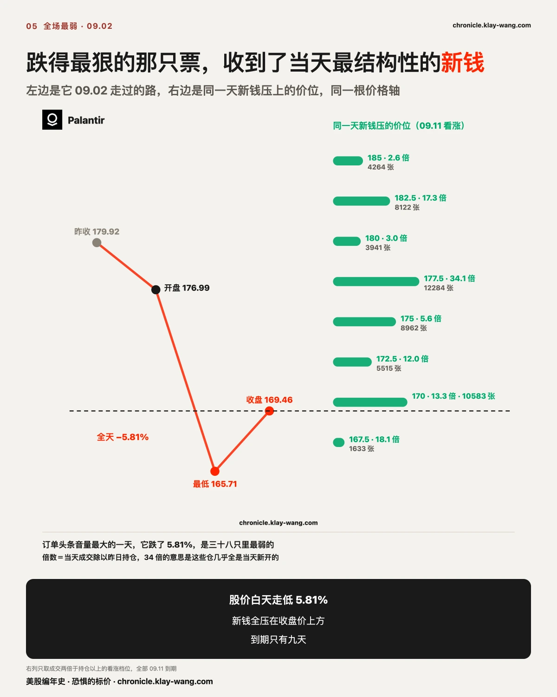
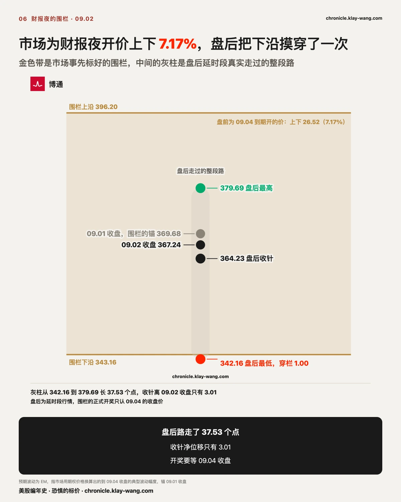
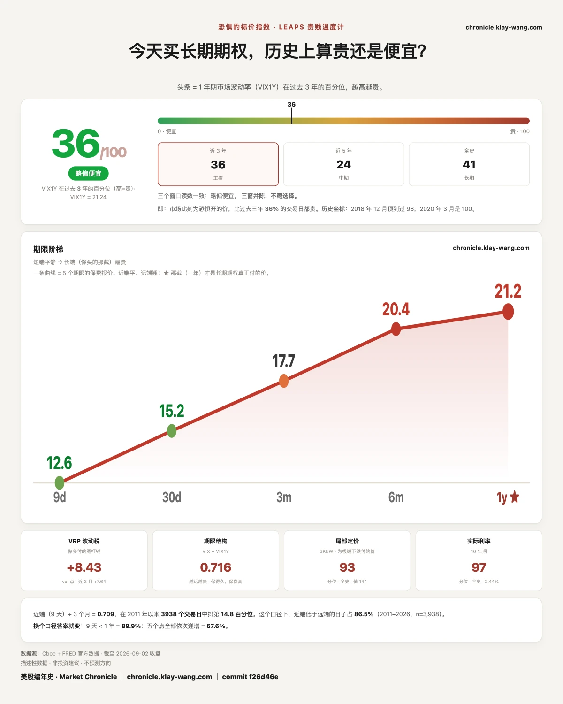

全世界都在说债市崩了，但是长债 ETF 今天跌了 0.79% · 8.31-9.4
三行干货：一天期的钱死了四成，新钱当天就搬去了下周和年底
一，昨天押特斯拉 09.02 到期的 2.374 亿逐档清算：收盘 357.01 卡在两大注中间，43.7% 归零，357.5 那档看跌只差 0.49 就一分不剩。
二，昨天被利率打趴的板块今天全弹了回来，贵金属从跌 2.58% 跳到涨 7.66%，唯独云与数据中心连续第二天垫底。
三，博通财报营收超预期、指引低了不到 1%，盘后在市场事先标好的上下 7.17% 围栏里走了 37.53 个点的来回，收针净位移 3.01。
〔开奖〕收盘 357.01 停在两大注中间，2.374 亿里 43.7% 归零
先回到昨天写下的那笔账。昨天全场七成的短线权利金压在特斯拉一只票上，其中 2.374 亿押 09.02 到期，看跌 1.466 亿对看涨 9087 万。判据当时写死：09.02 收盘价落在哪一侧，赢的是那一半。
今天收盘 357.01，涨 0.26%。这个价位的落点几乎是针尖上的：下注最重的两档是 355 和 360，收盘价正好停在两档中间。 360 看跌 3370 万整档活到收盘，是全场最大的赢家；355 看跌 3095 万整档归零，是最大的输家。两档相距 5 美元，命运相反。
更细的一刀在 357.5 那档。3 万 8 千张看跌、2820 万权利金，收盘价高它 0.49 就全部归零。收在 357.01，这 2820 万以 0.49 的距离活了下来。 一天期合约的输赢只写在收盘价上，白天最低下过 349.92、最高上过 360.62，途中经过多少次都不算数。
逐档算完：2.374 亿里价内 1.336 亿、归零 1.039 亿，归零占 43.7%。价内也不等于赚钱：活下来的合约拿到的是收盘价与行权价之间的差额，成本收不收得回来，取决于每一张当初的买入价，那本账只有持仓的人自己算得清。我们判的是昨天写死的那把尺，收盘价落在哪一侧，哪一半算赢。昨天的框架写的是看跌更重，最后看跌那侧 1.466 亿里活下来 8710 万，看涨那侧 9087 万里活下来 4640 万，两侧各输了大约一半。大注开在整数关口，收盘价停在关口之间，这一天没有全胜的一侧。 两侧的命中率放在一起更说明问题：看跌那 1.466 亿赢回 59%，看涨那 9087 万赢回 51%，几乎打平。方向在一天期的游戏里只值一半，另一半全在档位选在哪，355 和 360 之间隔着的那 5 美元，就是今天输赢的全部距离。
同一只票，今天的钱换了个面。今天特斯拉的异常成交权利金 3.973 亿，还是全场第一，占 57%，但方向侧翻了：看涨 2.908 亿对看跌 1.065 亿，昨天看跌重、今天看涨重。期限也齐齐后挪，最重那档从当日到期移到 09.04 到期，合计 2.558 亿。管线的事件日历标着 09.03 特斯拉在奥斯汀开 Cybercab 发布会，09.04 是盖住这场发布会的第一个周五。昨天的钱买的是 09.02 这一天，今天的钱买的是发布会之后那一段。
今天还有一笔当天进、当天开奖的：09.02 到期的看涨 1.112 亿，其中 352.5 一档成交 16.1 万张，是既有持仓的 74.9 倍，权利金 4740 万。按同一把判据，这 1.112 亿里约九成收在价内。早上进、下午开奖、当天清算，这批钱在市场里只活了几个小时。这 16.1 万张还有一层看头：74.9 倍于昨日持仓，比今天全场任何一笔结构性新钱都更彻底地属于当天，最短命的钱反而是最新的钱。一天期合约把下注、开奖、清算压进同一个交易日，这个市场的周转被拧到了极限那一档。同一只票四十八小时里走了三批钱：昨天的钱买今天，今天的钱一部分买今天自己、一部分买后天的发布会。每一批都有自己的到期日和自己的开奖价，混成一句特斯拉期权异动，三本账就全看不见了。

〔横截面〕昨天挨打的今天全弹了，只有算力那层没弹
板块面是昨天的镜像。140 个行业分类，昨天跌 100 个涨 39 个、中位数负 1.06%；今天涨 102 个跌 38 个、中位数正 0.70%。弹得最狠的正是昨天挨打最重的：贵金属和矿物从负 2.58% 跳到正 7.66%，白银从负 3.73% 到正 7.55%，黄金从负 3.77% 回到正 2.47%，昨天领跌全场的家用电器从负 8.43% 回到正 0.54%。跨资产同一方向：金 ETF 涨 1.51%，银 ETF 涨 1.98%，金矿 ETF 涨 3.12%，美元指数基金跌 0.14%。真实利率松一格，不生息的资产集体回血，昨天的逻辑今天原样反着跑了一遍。
例外只有一层：云与数据中心，昨天负 4.09%，今天负 2.05%，两天都在全场最底部，应用软件负 1.96%、系统软件负 1.34% 跟它作伴。昨天它跌，全场有一个现成的解释，利率打折现，长现金流挨刀。今天利率松了，这个解释到期作废，它还在跌。一个解释只能用一天的下跌，说明跌的原因从来就没在那个解释里。
对照着看才知道这两天有多拧。需求端的音量这两天开到了最大：英伟达在投资者会议上说不受供应限制业务能翻倍，台积电说全球近二十座晶圆厂同时动工、设备需求半年翻了近一倍，戴尔单季 AI 服务器新订单是当季收入的三点七倍。喊翻倍的话音未落，供给侧的股价体系里，芯片在涨，英伟达 +3.21%、美光 +2.42%，而云与数据中心连跌两天。市场在把算力这门生意拆开定价：造芯片的归造芯片的，中间租算力的归中间租算力的，叙事的音量只灌进了前一半。 离终端现金流越远的那一层，越先被卖。
榜首另有一桩事：海运港口运营商涨 8.70% 排 140 个分类第一，霍尔木兹的油轮遇袭进入第二天，运价和保费在替风险定价。

〔债市〕加息的故事讲到第三天，为乱付钱的人还是没出现
这两天流传最广的一个读法是：华尔街在故意抛售长债、把长端收益率顶上去，用一场压力测试逼央行表态，甚至是在怂恿加息。故事的材料很足。十年期昨天到过 4.78%，2025 年 1 月以来最高；理事巴尔公开说，通胀降温不够就应果断加息；财长贝森特唱反调，说这是供给冲击，不该用加息去应对。官员在吵，收益率在涨，连剧本里的角色都到齐了。
压力测试这个说法自带一把尺：得有人在受压。拿这把尺去量今天的账本，四处的钱四处都平静。长债 ETF 全天振幅 0.37%，比标普 ETF 还安静，收涨 0.10%。长债 ETF 的期权更直接：30 天保险今天只动了 0.04，一天的异常成交里看涨张数接近看跌的两倍，期权桌上更重的那侧押的是债券价格涨回去，跟出逃的剧本整个反着。为利率波动买保险的价钱确实在涨，涨到了连着第五天，从 08.26 的 69.44 走到 09.02 的 79.71，五天抬了 10.27。但看两个细节：位置才从近三年第 11.8 位爬到第 29.4 位，过去三年七成的日子都比今天贵；近三天的日增量一天比一天小，4.35、2.56、1.83，爬坡在减速不在加速。这轮连涨的起点也要交代：08.26 它才 69.44，三年分位只有 11.8，从三年谷底附近起步涨五天，涨到的位置仍在三年的下三分之一。起点这么低的爬坡，在它自己的历史里算不上一个事件；全天债市方向上唯一一笔结构性新钱，是 4750 张 12.18 到期、行权价 55 的长债 ETF 看跌，位置比现价低 33%，权利金按张算不过几美分，一张彩票的价钱。
受压的人，一个都没找到。这个故事需要一场恐慌，而账本里没有人为恐慌付钱。 有序和恐慌的区别从来不在涨跌本身，在还价：恐慌的市场里保险是抢的，价格跳档；今天的市场里每一处报价后面都还站着愿意慢慢接的人，价钱一格一格挪。
数据这一侧同样对不上剧本。早上 8 点 15 分，8 月 ADP 民间就业只增 3.8 万人，低于预期的 4.8 万，1 月以来最小增幅，昨天 ISM 制造业两个口径双弱。增长数据连坏两天，照剧本长端该被供给恐慌顶着继续走高，实际发生的是三十年期收益率从日内高点回落。债市这三天的定价里没有恐慌，只有一次已经被标好概率的加息。市场为一次付了钱，没有为一串付钱，八月刊立下的这条判断，今天第二次对表，仍然站着。
巴尔和贝森特那场架也值得按定价读一遍。两个人吵的其实是同一张资产负债表的两侧：一个怕通胀写进工资和定价，一个怕利息吃掉财政。这场架要到决议那天才有裁决，而利率互换市场已经先押了 65% 给其中一边，押的与其说是通胀路径，不如说是这届央行要用一次加息买回多少信誉。
日历会给这个判断连排三场检验。周五 09.04 非农，09.11 通胀数据，09.15 到 09.16 议息，决议在 09.16 周三下午。按 65% 的加息定价，这周的就业数据已经从裁判降级成注脚：市场把 9 月这次加息读成一场信誉工程，数据好坏改的是幅度，改不了剧本。真正能改剧本的是 09.11 那个通胀数字，和 09.16 决议后官员嘴里的那个词是一次还是一串。会议日期此前两期写作 09.16 到 09.17，与日历源核对后更正为 09.15 到 09.16，带日期记此一笔，旧文不回改。
〔新钱〕几十倍于持仓的成交倒不出旧仓，这是当天新下的注
每天的异常成交里，多数是旧仓倒手、对冲滚动和事件前的例行排队。分辨新钱只需要一把尺：当天成交对既有持仓的倍数。 倍数几十，说明这些合约昨天几乎没人持有，仓是当天新开的；倍数不到 1，多半是旧仓在换手。
用这把尺筛完今天全场，两个期限上各站着一排，方向全在看涨侧。
近端在下周。超微 462.5 看涨成交是持仓的 53 倍，英特尔 94 看涨 44.6 倍，美光 900 看涨 35.5 倍，Palantir 177.5 看涨 34.1 倍，迈威尔 210 看涨 5.2 倍。五只票、五笔结构性新仓，全部押 09.09 与 09.11 到期，没有一笔在本周。美光那边还不止一档：900 到 950 排成一条阶梯，三档合计权利金超过 1400 万，昨天英伟达在投资者会议上把供应瓶颈点名在先进晶圆和高带宽存储上，今天存储的下周看涨侧就多了一条新阶梯。这条阶梯立刻就有一道对表题：今晨一份研究报告说英伟达把下一代产品的高带宽存储规格砍了一半，存储占物料成本的比例从四成降到二成八，省下的钱挪去了网络互连。阶梯只活到 09.09，报告讲的是明年的用量，两个时间尺度隔着一年，明天的盘面会说市场把哪个当真。
远端在年底以后。英伟达 2027 年 3 月到期、行权价 320 的看涨今天成交 21759 张，是持仓的 12 倍，价位高出现价 42.6%；谷歌 12.18 到期的 450 看涨 14054 张、4.1 倍，380 与 500 两档也各有 2 倍以上的新流；亚马逊 360 看涨 12603 张、2.9 倍，高出现价 41.2%；微软 690 看涨 5272 张、2.8 倍。微软今天另有一桩结构性的事：宣布十余年来首次重组财报分部，Azure 从下季度起独立披露，它上一财年收入 1019.38 亿，占公司总营收近三分之一。短端保险全线降价的同一天，有人在为这几家 12 月到明年 3 月的上方价位付新钱。
这两天喊翻倍的两家，保险的账本也各自记了一笔。英伟达开投资者会那天起，30 天保险从 31.19 抬到 32.73，加 1.54；一年期从 38.86 到 39.34，只加 0.48。翻倍说的是 2028 财年，市场给一年后的保险只肯加半个点。台积电更干脆，说全球二十座厂同时动工的当天，它 30 天保险降 0.97，一年期降 0.75，两档一起降价，它的权利金位次连全场前十都没进。翻倍故事的音量买不动保险的整条曲线，买得动的只有几个又远又窄的行权价，明年 3 月那张 320，就是这种钱选中的出口。 320 这个数字当天还有另一个出处：一家大行给英伟达挂的十二个月价码正好是 320，比 09.02 收盘高 43%。两万一千张挑中的行权价和它分毫不差，是巧合还是对表，成交记录不回答，数字摆在这就够了。
同一天的申报文件里躺着一笔反向的记录。英伟达一位董事在 08.31 到 09.02 三天里分七笔卖出 184.85 万股，加权均价约 222.26，套现约 4.11 亿，卖掉了名下持股的 35.5%。期权账本里有人为明年 3 月高出现价四成的价位付新钱，申报文件里有人在现价附近兑现三分之一的持股。两笔都不是预测。两个人各自的账，摆在同一天里对表。
同一把尺也把两类噪音筛了出去。指数远期的看跌盘今天成交不小，纳指 ETF 12.18 的 700 看跌走了 19127 张，但成交只有持仓的 0.4 倍，是旧仓在倒手；英伟达 2027 年 2 月、行权价 110 的看跌 5005 张、13.1 倍，倍数很高，但价位比现价低一半，那是尾部保护的常规形状。这两类都不进上面的名单。把新钱和这两类混在一起念异动，等于什么都没念。


〔转发〕音量最大的 AI 应用票跌得最狠，新钱却压在它头顶
今天 AI 应用叙事的音量到了顶点。Palantir 拿下美军 8 套 TITAN 地面站的主承包，配的故事是把 Token 炼成现金流，头条里引用的大行价码，最高的一家把十二个月后的定价挂到 255。
价格给出的是另一份答卷。Palantir 今天跌 5.81%，是我们跟的三十八只里最弱的一只。 而且跌法说明问题：开盘只低开 1.63%，剩下 4.25% 全是白天一路走出来的。隔夜情绪只欠了小头，白天的卖出才是大头。头条捧得最高的一天，盘中一直有人在卖，这两件事今天同时为真。
期权那边同一天出现了第三件事。它 09.11 到期的看涨侧涌进一整片结构性新仓：177.5 一档成交 12284 张，持仓只有 360 张，倍数 34；170 一档 10583 张、13.3 倍；182.5 一档 17.3 倍；167.5 一档 18.1 倍。全天它的看涨权利金 1530 万对看跌 990 万。股价白天走低 5.81% 的同一天，有人为它九天后收盘价上方的价位付了新钱。 成交记录不显示这些钱押哪一侧的方向，它显示的是位置和期限：钱压在上方，窗口只有九天，答案 09.11 收盘自己揭晓。这一天，它的期权账本比它的头条诚实。

〔博通〕7.17% 的要价看着贵，盘后一趟来回证明它没要多
今天收盘后博通交财报。数字这一侧几乎没有可挑的：第三财季营收 295.9 亿，同比增 86%，高于预期的 293.6 亿；每股收益 3.32 对预期 3.24；半导体收入 167 亿超预期。缺口只在指引：第四财季指引 348 亿，比市场预期低了两三亿美元，不到 1%（各家口径在 350 亿到 351 亿之间）。电话会上管理层把后年的账摊开：本财年 AI 收入指引从 560 亿上调到 580 亿，2027 财年翻倍到约 1150 亿，2028 财年再翻倍到约 2300 亿，口径是已锁定的供应；第四财季毛利率指引 73%，比去年同期低 5 个点。要规模，把利润率排在了后面。
盘面对这份财报的定价早上就挂出来了。今天盘前，市场为它到 09.04 收盘开的预期波动是上下 26.52 美元，7.17%，区间 343.16 到 396.20。这个价开得不便宜：它 30 天期的保险今天在 50.4，排自己近一年第 67 位，高过一年期的 46.76，是我们跟的二十一只里唯一一只近月贵过远月的，事件溢价全堆在前端。
盘后的走势拿这个围栏对了一遍答案。第一反应向下，最低 342.16，恰好把下沿摸穿一个点；然后掉头，最高上到 379.69，离上沿还有 16.51；盘后收针 364.23，比正股收盘低 0.82%。从最低到最高走了 37.53 个点，收针净位移只有 3.01。 第一反应砍掉 6.8%，砍的并不是平均预期那不到 1% 的缺口：报道里流传的期待更高，有机构把第四财季看到 360 亿以上，盘后先按这份私账定了价，两个小时后市场自己把大部分收了回去。围栏的正式开奖只认 09.04 的收盘价，今晚这些是延时段的中途读数，两边都摸过、收在栏内，钱暂时没有输家。
明天早上有一个现成的检验：那层堆在前端的事件溢价还在不在。财报一出，事件就从未知变成已知，30 天保险回落到一年期下方，说明溢价出清；继续倒挂，说明市场认为这份财报没有把不确定性消掉。

这对你手里的票意味着什么
下面不给任何操作建议，只把价格换算成你自己能判断的东西。
手里是大盘 ETF 的：今天 140 个分类涨 102 个、中位正 0.70%，昨天的下跌被大面积收回。两天合起来，指数几乎走平，动的是内部的席位。
手里是特斯拉的：明天 09.03 是 Cybercab 发布会，今天新进的钱最重那档押在 09.04 到期、看涨 1.634 亿对看跌 9230 万。这批钱买的是发布会之后那两天的走势，输赢 09.04 收盘见。
手里是博通的：市场事先为财报夜标的价是上下 7.17%，盘后实走没有出栏。它 30 天保险今天在自己近一年第 67 位，财报落地后这层事件溢价通常会塌，保护的价钱明天大概率比今天便宜。
手里是半导体或存储的：下周到期的看涨侧今天进了五笔几十倍于持仓的新钱，美光 900 到 950 排成阶梯。这些钱的窗口只到 09.09 和 09.11，那两天收盘就是它们的对账日。
手里是 Palantir 的：股价白天走低 5.81%，同一天九天后到期的看涨侧进了 34 倍于持仓的新钱。两笔账指向相反，明晨的隔夜持仓会先揭晓一半：新仓留下，钱是认真的；回到原位，只是当天来回。
手里是黄金白银或加密的：昨天它们一起跌，今天金银弹回来了，加密三只里只有 Mara 收正。同一个抽屉里，弹性并不平均。
含义摆全，怎么动是每个人自己的账。
今天值得带走的三句话
一，成交对持仓的倍数，是分辨新钱和旧仓的第一把尺。 倍数几十，仓是当天新开的；倍数不到 1，多半是旧仓换手，别把滚动读成进攻。
二，财报夜的围栏在盘前就标好了价。 之后的暴动只是在给这个价对答案，先看市场要了多少钱，再看实际走了多远。
三，一天期合约的输赢只写在收盘价上。 白天穿过多少次都不算，收盘差 0.49 和差 49 是同一种结局的两个写法。
预告与下一期回访
下面每条都写死了判据和唯一来源，下一期照着量。
特斯拉 09.04 那档 2.558 亿，盖住明天的 Cybercab 发布会。 今日读数：看涨 1.634 亿对看跌 9230 万，收盘 357.01。判据：09.04 收盘价落在哪一侧，两侧下注的档位赢的是收盘价所在那一半。只引短打表收盘轮与收盘价。
Palantir 那片 09.11 看涨集群，留没留看明晨。 今日读数：177.5 一档成交 12284 张对昨日持仓 360 张，170 一档 10583 对 796。判据：09.03 晨结算持仓对今日成交的比值向 1 靠拢＝新仓住下；回到原位＝当日来回。最晚 09.03 晨取，过期永久缺失。
博通两笔账分开记。 围栏：09.04 收盘落在 343.16 到 396.20 之内＝兜住，之外＝冲破，只认收盘价。事件溢价：今天 30 天保险 50.4 对一年期 46.76，09.03 盘前 30 天回到一年期下方＝溢价出清；继续倒挂＝财报没消掉不确定性。只引结构日报盘前那一轮。
八月刊那条债市判断继续挂着。 今日读数 79.71、近三年第 29.4 位，连涨第五天，日增量连续两天收窄。推翻条件不变：这把尺冲上近三年 90 百分位，或九月加息落地后一年期读数三日内抬过 55，则收回认错。下一个检验点 09.16 决议日。会议日期此前写作 09.16 到 09.17，经日历源核对更正为 09.15 到 09.16，决议 09.16，此处带日期记一笔，旧文不回改。
三十天与一年期的分岔、苹果换帅的定价，两条九月窗口未触发，继续挂。 判据与来源见 09.01 期，不重复立案。
〔温度计〕加息在股市这边已经不算风险，只算日程
还有一把尺子量的是股票市场为未来一年买保险的价钱，今天它给出了全场最大的一个动作。恐惧的标价指数读数 35.8，昨天还是 46.8，一天退了 11 个分位。 驱动它的价钱只动了一点：一年期波动率从 21.93 落到 21.24，动了 0.69。昨天的稿子刚写过这把尺的脾气，它落在分布最密的一段，排名的跳动比价钱的跳动大得多。昨天是 0.06 换 1.3 个分位的上行版，今天是 0.69 换 11 个分位的下行版，同一个机制，两天各演了一个方向。
五档期限今天全线降价：九天 14.33 落到 12.57，三十天 16.34 落到 15.20，三个月 18.33 落到 17.73，六个月 20.56 落到 20.36，一年 21.93 落到 21.24。降得最狠的是最近那一档，九天期一天掉 1.76，是一年期降幅的两倍半。上周被加价的是近端，这周先撤价的还是近端，事件溢价来去都走门口。
把两把尺摆在一起看，今天它们分了家。债市那把连涨第五天，79.71、第 29.4 位；股市这把全线降价，退到第 35.8 位。同一天、同一批宏观新闻，两个保险市场做了相反的动作。分家这件事就是今天的读数：债市在为一次加息重新记账，股市把同一件事归档成了日程。 为不确定付钱的人少了，剩下的是等日子的人。

恐惧的标价指数（Fear-Price Index）· 2026-09-02 · 读数 35.8/100：一年期波动率 VIX1Y 为 21.24，
处于近三年第 35.8 百分位，高即贵。逐日台账与口径 → chronicle.klay-wang.com · 转载注明：恐惧的标价指数 · Market Chronicle
期权异动与个股逐日 → chronicle.klay-wang.com/options
温度计读数与两本台账 → chronicle.klay-wang.com
明天开盘前值得回来看一眼的有两个数：Palantir 那片 09.11 看涨集群的隔夜持仓，留下还是回原位，明晨结算见分晓，逐票在期权页每个交易日更新；另一个是博通 30 天保险塌不塌下来，那层财报溢价的去向写在结构表里，站上台账逐日更新。
本站不提供投资建议，不预测方向，不做择时。